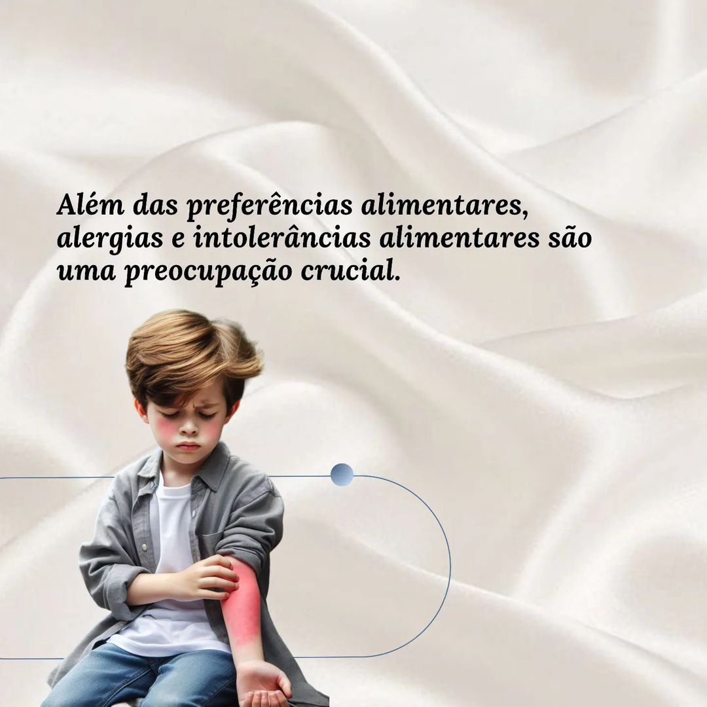
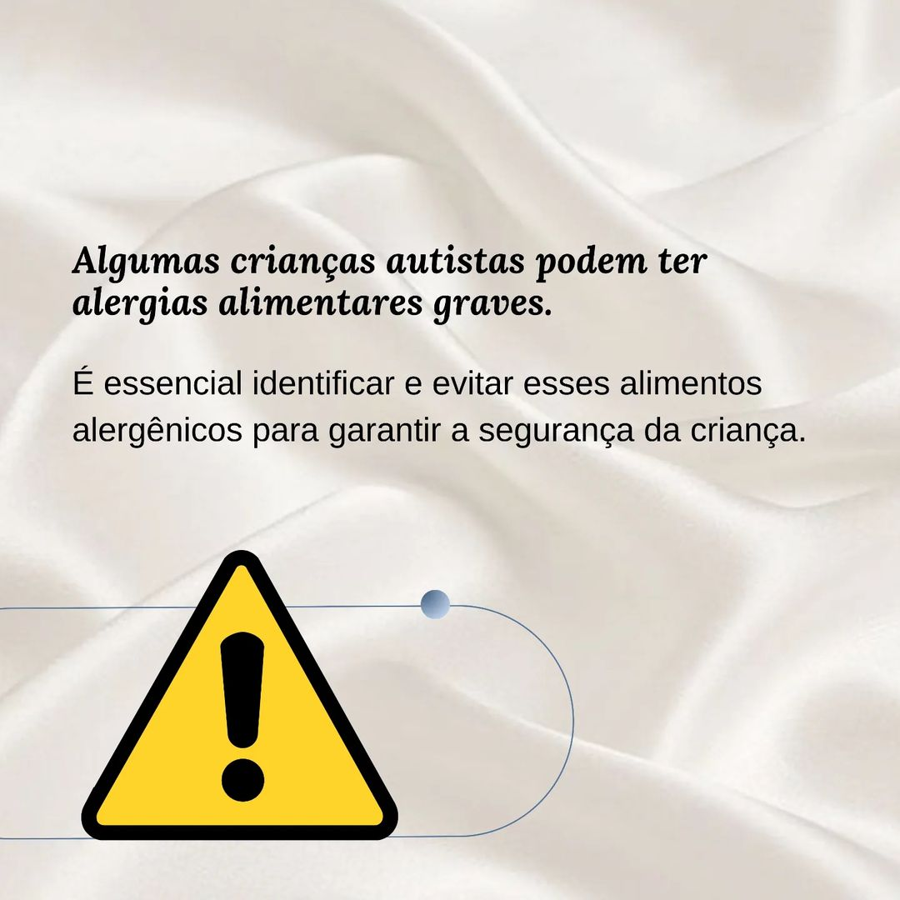
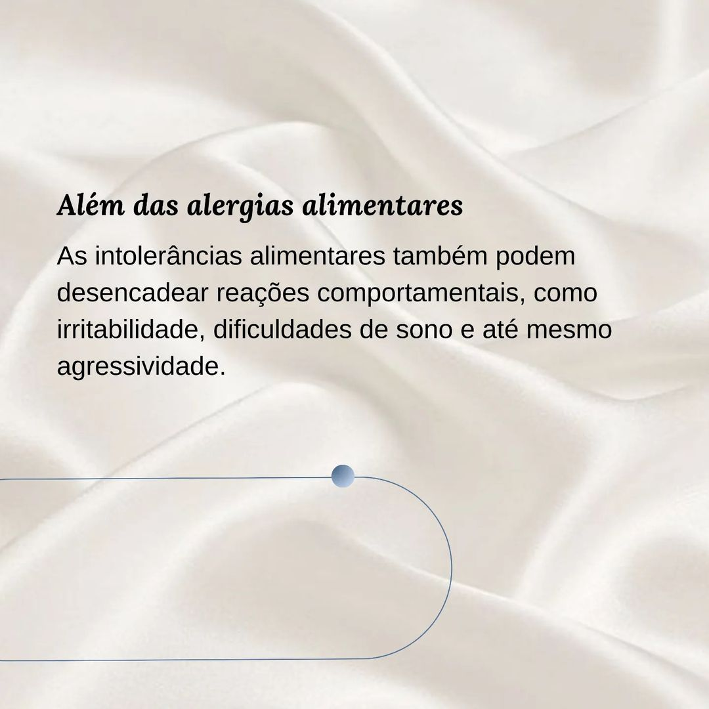
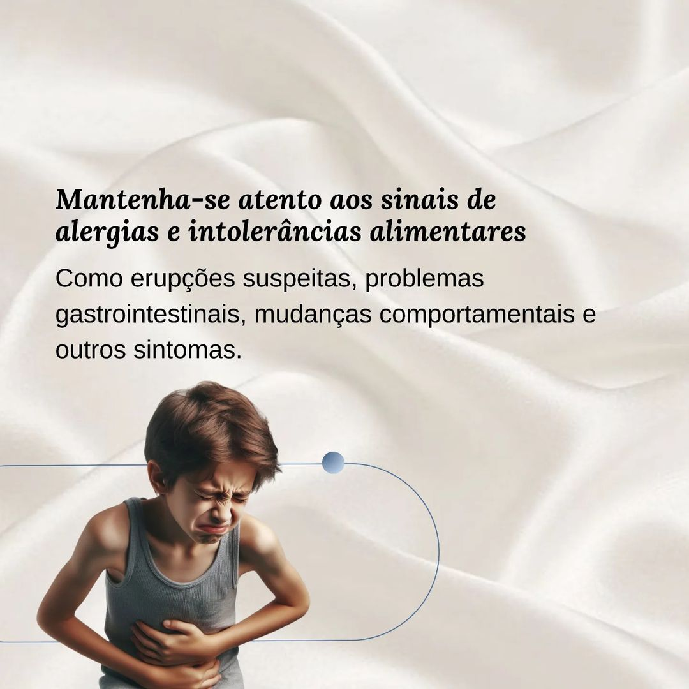
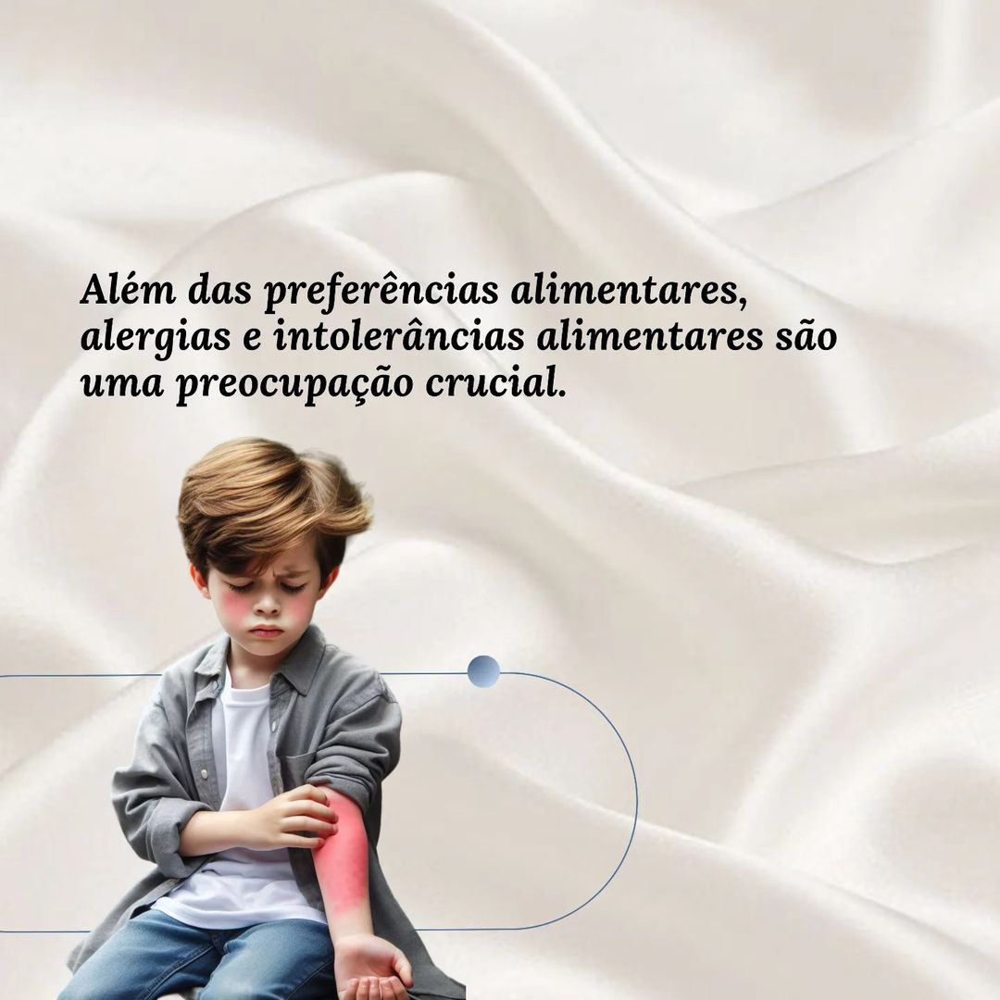
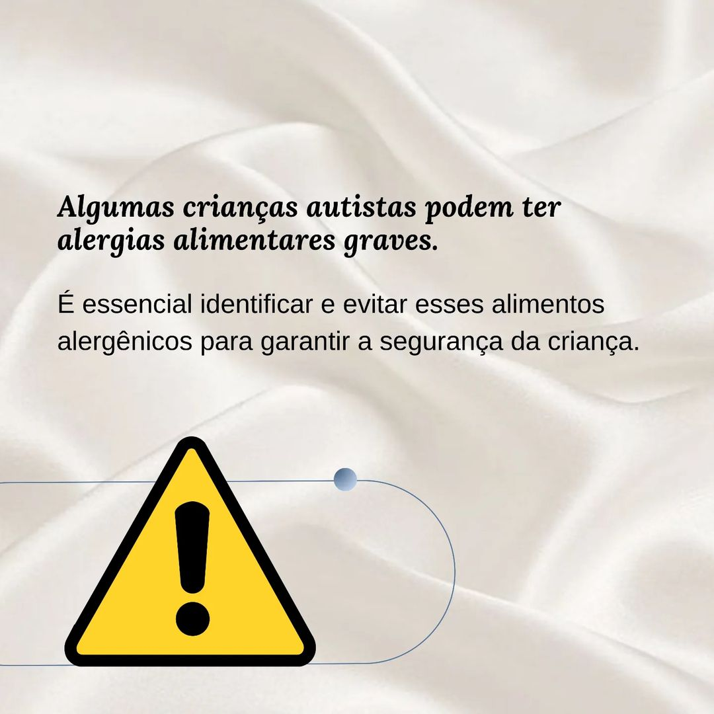
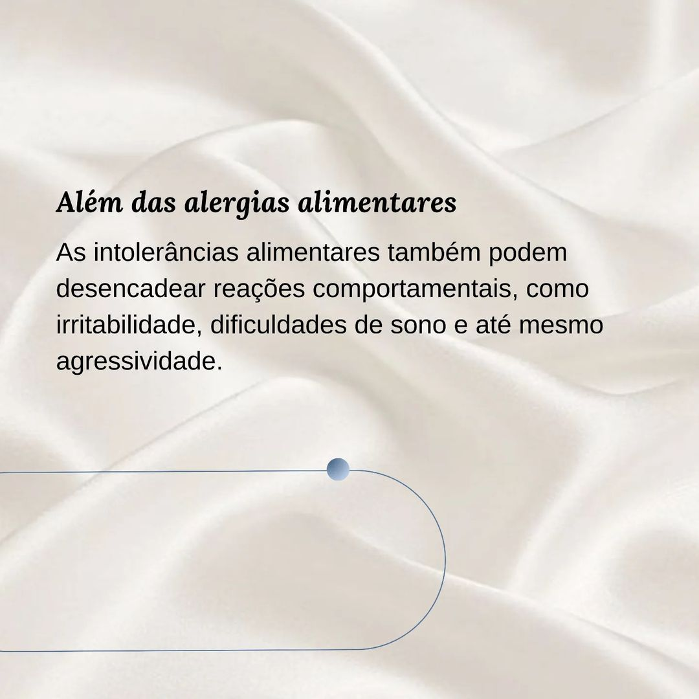
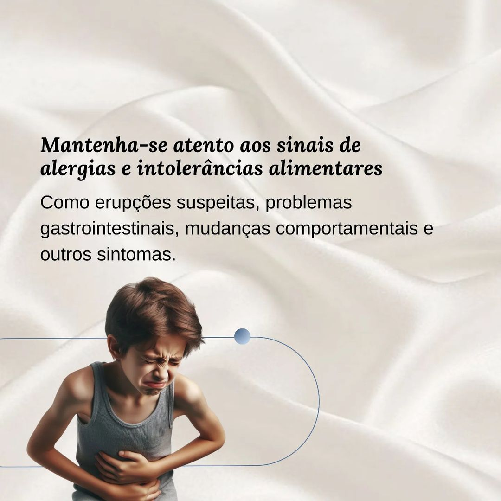

Alergias e intolerâncias alimentares
As alergias e intolerâncias alimentares refletem diretamente no comportamento de uma criança autista, já que muitas vezes ela não consegue explicar o que está sentindo, deixando o diagnóstico mais tardio em alguns casos. Observar possíveis mudanças no comportamento da criança diariamente, pode ajudar no diagnóstico.
 






